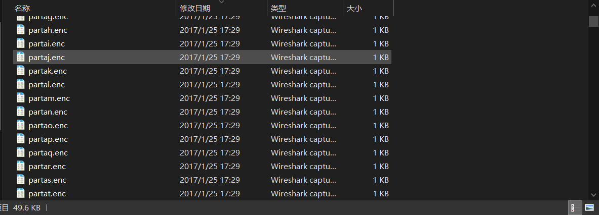

BreakIn2017 WP¶
Mysterious GIF |MISC¶
使用binwalk能得到信息:
1 2 3 4 5 6 | DECIMAL HEXADECIMAL DESCRIPTION -------------------------------------------------------------------------------- 0 0x0 GIF image data, version "89a", 440 x 608 2670386 0x28BF32 Zip archive data, at least v1.0 to extract, compressed size: 112890, uncompressed size: 112890, name: temp.zip 2783320 0x2A7858 End of Zip archive 2783420 0x2A78BC End of Zip archive |
用binwalk -Me可以提取出文件
学习使用一下identify命令提取信息 %c是提取元数据的信息
1 2 3 4 5 6 7 8 9 10 11 12 13 14 15 16 17 18 19 20 21 22 23 24 25 26 27 | pxy@LAPTOP-UBIEP4K5:/mnt/f/1.ctf/exercise$ identify -format "%s %c\n" Question.gif 0 4d494945767749424144414e42676b71686b6947397730424151454641415343424b6b776767536c41674541416f4942415144644d4e624c3571565769435172 1 5832773639712f377933536849507565707478664177525162524f72653330633655772f6f4b3877655a547834346d30414c6f75685634364b63514a6b687271 2 67384f79337335593546563177434b3736367532574c775672574d49554a47316a4444725276595049635135557143703545445143696f524d4763555a456732 3 75766c3134324c44424161654f4c7a464d3465324a637a532b307238356d5052724353786a4c4b4c614c774949516e5a58497058535552562f776a6877575231 4 664a474738512b7563454170615873634e435546343462506d344850434a2f306d7244435457482f59324350564a6b4e6b2b6f305637564f74484b734d4c344e 5 434e414a483434572f4952774a6e744e572b4e3848726770526b467567686d4e6a63776c456b7274554b4731735243792f2f57687544756e5632706853525176 6 486f74425a76796441674d424141454367674542414a79614e336d6c6b756e772b617137704b5561677636437a6442477964394a78447941706b314b374f4938 7 54426873464d2f33744246654131592f41762b7568434c727967726b4279652f6963372f2b30356f3853392b65674d6b52584e484b41757952336752696b7759 8 7678454b634a676a5a5a4c524656794159372f6c477634774e42683362495044664631446739737a596e6b774948396c4c454679656d4d3734416941596c6371 9 6456645a49452f6271325a344a4f307439484367485a4e6651374a645266656a4e4a51565955443031517535644d744f523465494d6462576b68625658773254 10 45304837785178746a7754367a557270714576764f376533464845734249583635565258524c6276394f6f61794a786352715838654a6b5269344c2f597a6f34 11 4b5470456d6b64754a4c58734677743361715154626a5a48584f6c5454344e45647348327030547343414543675945412f653162737a4f3061312b6342614451 12 6a514f2b50763942734a464442336f314c477555484d4e53384644706e334a3436556b59796b353276496130763454636a715353484e4976585730544445556b 13 624e4641314870557856786c7730426965656838426733486658795142685876645444376b306c73446d4d456f3455504b59533644356359577972776864356e 14 4344304c72786562674f373552784c35514549452b34435649516b4367594541337638522f584b52564a50453461456567377051347554766346786a454e4e65 15 787866364b34787059344c6639636c49766465635268433274314864522b7853756c552f52536152727a4863773378672b4c31754f3073317435533766336e75 16 3361696849586b636747537158435a3156487a426d65433430545673664179627337714a30785936543571384d6e78324f62355a336c49477579686a65566174 17 4649493253647a324a2f55436759454174654131357a516f6a53504e482b62676d62424e717465763247556a536f374932556b777243316e4559515334636266 18 5064444364643066684d6444585534766e2b66575539686b58706d4b7043592b416363626c56554e744e4d4b6649423453484d78716a426961386f31616e5a35 19 726b6e6f5638576d4a4f50645a6259666478422f4b4432454434444243464756494c79417975657731506657436f64586969502f5a356a67742b6b4367594541 20 727378716f61306f316f3975695237752b48735835494e6f5854394f4f475933715144576a55526e61435779774d756a525979355a774b363930416f6f4c5253 21 744e555633334b3453416868384b7153714f6830652b34636b5762354170666c38634b3561362b76383854303958384141645935504247335465622b7673357a 22 54704d75626c54434b4a773259617a4754385579564e38666635334e4f3951426f4533686d45796f642f4543675941396b307879434a7a6376654b6478727936 23 706a51786b39465a7a3341744570316f635635566f776167562b4f4e657a2f4863634638474a4f384244716c5036586b634c5574736e70367459526545494349 24 484b7735432b667741586c4649746d30396145565458772b787a4c4a623253723667415450574d35715661756278667362356d58482f77443969434c684a536f 25 724b3052485a6b745062457335797444737142486435504646773d3d |
猜测出是16进制编码，转一下得到：
1 |
这其实是一个私钥，之后可以用来解密enc文件
没有仔细审查binwalk提取出来的文件，其实有这么一堆文件：

所以遍历这些文件用私钥解密再将内容保存到图片即可
1 2 3 4 5 6 7 8 9 10 11 | pxy@LAPTOP-UBIEP4K5:/mnt/f/1.ctf/exercise/_Question.gif.extracted/_temp.zip.extracted$ for i in `ls` > do > openssl rsautl -decrypt -inkey Question.txt -in $i >> flag.jpg > done RSA operation error 140493738283456:error:0D0680A8:asn1 encoding routines:asn1_check_tlen:wrong tag:../crypto/asn1/tasn_dec.c:1129: 140493738283456:error:0D06C03A:asn1 encoding routines:asn1_d2i_ex_primitive:nested asn1 error:../crypto/asn1/tasn_dec.c:693: 140493738283456:error:0D08303A:asn1 encoding routines:asn1_template_noexp_d2i:nested asn1 error:../crypto/asn1/tasn_dec.c:626:Field=n, Type=RSA 140493738283456:error:04093004:rsa routines:old_rsa_priv_decode:RSA lib:../crypto/rsa/rsa_ameth.c:72: 140493738283456:error:0406506C:rsa routines:rsa_ossl_private_decrypt:data greater than mod len:../crypto/rsa/rsa_ossl.c:401: pxy@LAPTOP-UBIEP4K5:/mnt/f/1.ctf/exercise/_Question.gif.extracted/_temp.zip.extracted$ |
这时候就得到了flag
openssl的用法，rsautl标明是用什么算法 inkey指明密钥 -in表示输入的文件，这里通过循环遍历ls的结果得到每个文件名 -out指明输出的文件，这里是用重定向的方式，因为默认的输出为标准输出
还有一个坑：
RSA的私钥文件格式：（这个我是参照我.ssh目录下存放的私钥来看的
1 |
TODO：如何将identify输出的内容进行整理（用python或者Linux命令行